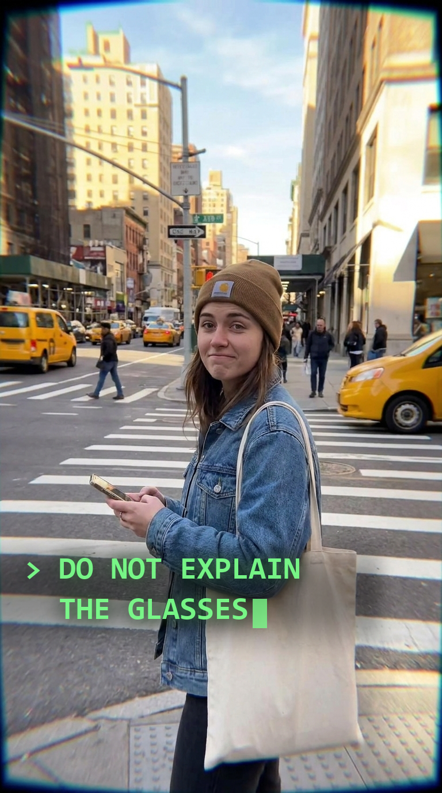

Series pitch · Cluely beta week · Aug 18–22
A street series that looks like ordinary phone footage, is entirely generated, and never admits it — until the episode where it does.

Shot entirely POV through smart glasses. You never see the wearer — only the stranger he's talking to, and the overlay feeding him his lines. He obeys it completely. It is always right.
Every episode closes on the same two words.
The fixed beat: > YOU'RE WELCOME. closes every episode. Dry, smug, unearned. That's the handle — once it lands, people start commenting it under any video where someone gets bailed out. The comment is the distribution, not the video.
Post it as a normal creator account. No branding. No watermark. No “made with AI.” Just a guy with smart glasses approaching strangers, and an overlay that's always one step ahead.
The audience will argue furiously about whether the glasses are real. Nobody will think to ask whether the street is.
One episode. He approaches someone. The overlay feeds him a line — and the stranger says the overlay's next instruction out loud, before it prints. The street stops moving. Everyone in frame turns to camera.
Card: None of these people exist. None of these streets exist. Forty episodes, one tool.
The reveal isn't a feature list. It's a betrayal — and six weeks of accumulated belief is the entire payload. You can't buy that reaction with a demo reel, because a demo reel tells people it's fake in the first frame and forfeits the only thing worth proving.
Same wearer, same overlay, same fisheye, forty episodes. Character and frame consistency across a series is where every model still falls apart. If the tool holds it, that's a capability claim nobody else can make. If it drifts, you've found the bug that matters most — before launch, not after.
Cinematic hides flaws in grade, grain and shallow focus. A plain sunny sidewalk at 2pm hides nothing. Passing as a boring phone video is a bigger flex than passing as a movie — and it's the one that makes people feel something, because it's the register they trust.
You never generate the protagonist's face — the thing viewers clock first and models break soonest. One character per frame instead of two. Call it double the usable takes per hour, which is what actually decides whether forty videos exist by Friday.
Natural light, no cutaways, a stranger delivering real dialogue straight down the barrel. Nowhere to hide.
The wearer approaches:
Same POV, same overlay, same closing beat. The comedy lives in the machine's cold competence and the human's total obedience — never in the conquest. That's what keeps it funny instead of grim, and it's what lets the series survive past episode eight.
“If every single person in the world saw this, 50% would have a very strong negative reaction. If the number's not 50, you're probably not being ballsy enough.”
— Roy Lee
Wave one, during Phase 1: half the comments call it dystopian and predatory, half ask where to buy the glasses. Nobody watches it neutrally.
Wave two, at the reveal: every person who spent six weeks defending it as real. That's a bigger fight than the first one, and it arrives exactly when there's a product to name.
Which means the deliverable for five days isn't a hit — it's a template that survives being run forty times. A brilliant one-off is worth less to you than a repeatable frame with slots, because the frame is what the machine eats.
Generated footage is free for everyone now, so volume isn't a moat and neither is fidelity. The channels getting deleted this year are the ones where the model generated the idea too. AI-executed, human-authored is the only durable version — and the forty premises are the human half.